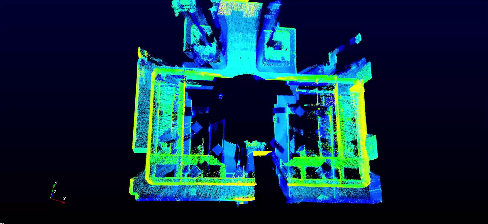

4. 案例介绍¶
4.1. Livox商用案例简介¶
1.Livox联手AutoX，让你更快坐上无人驾驶出租车
“我们一直在测试和使用市场上的各种激光雷达传感器，我们很高兴找到一种能够兼具高性能、高可靠性和高性价比的激光雷达。看到Livox正在通过创新技术重新定义激光雷达市场，我们无比激动。AutoX将于2020年在新的RoboTaxi车队中使用Horizon和Tele-15。”AutoX创始人兼CEO肖建雄教授表示。 点击了解详情

2.Livox览沃 × 希迪智驾，谱写智能重卡物流新篇章
“目前，希迪的L4级智能重卡，已经可以在高速路上以100公里每小时进行自动驾驶。我们对Livox的产品非常有信心，也很满意他们提供的技术支持与服务。有了Livox激光雷达的助力，我们非常期待商用重卡自动驾驶方案能快速落地。”希迪智驾CEO马潍表示。 点击了解详情

3.Livox览沃 × 高仙商用清洁机器人：科技改善生活
“通过与Livox的合作， 我们对于推出更多拥有高性价比的机器人有了更充足的信心”——高仙机器人算法总监宋乐。 点击了解详情

4.2. Livox开发案例简介¶
1.缩短算法开发周期，Livox LOAM 让好产品更好用
从传统机械旋转式激光雷达切换到Livox激光雷达的算法迁移难度并不高，而大规模商用时节省下来的真金白银远大于算法迁移成本。 点击了解详情

2.静态3D扫描 Mid-40便携式解决方案
本案例中，我们将在三脚架上装上一个Mid-40雷达和一个电机，然后绕着Z轴旋转扫描房间内不同区域，并整合点云数据以生成整体3D图像。 点击了解详情
3.移动三维建图 - 香港大学测距和建图
激光雷达作为新一代测绘利器，在移动三维建图中有着巨大的潜力。使用激光雷达可以快速构建周围环境的3D地图，具有测量精度高、方向性好等优点，且不易受周围环境光、雨尘等影响。针对此专题，香港大学MaRS实验室使用了Livox Mid-40激光雷达，并开发出一种针对性的测距和建图算法LOAM-Livox。 点击了解详情

4.UAV 3D测绘 Mid-40与M600集成测绘惠州湾大桥
为了演示 Livox 激光雷达在 3D 测绘应用的巨大潜力，我们将M600和Mid-40进行集成，并对全长3公里的广东省惠州市的惠州湾大桥进行了测绘测试。 点击了解详情